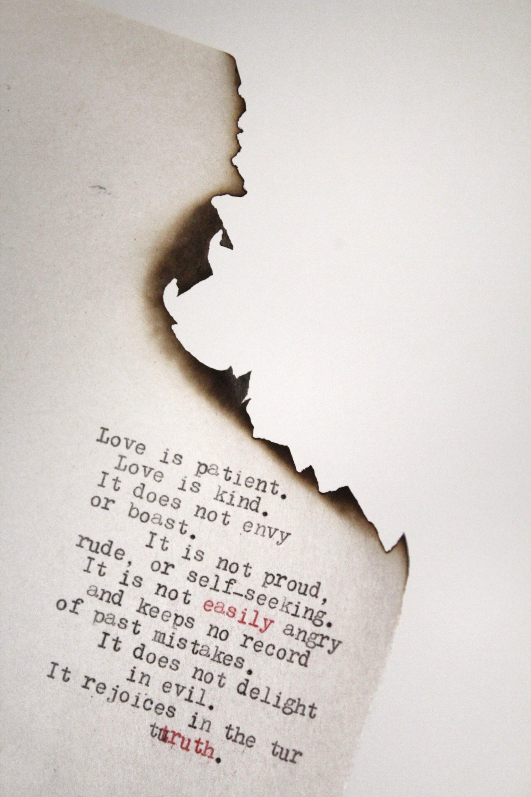
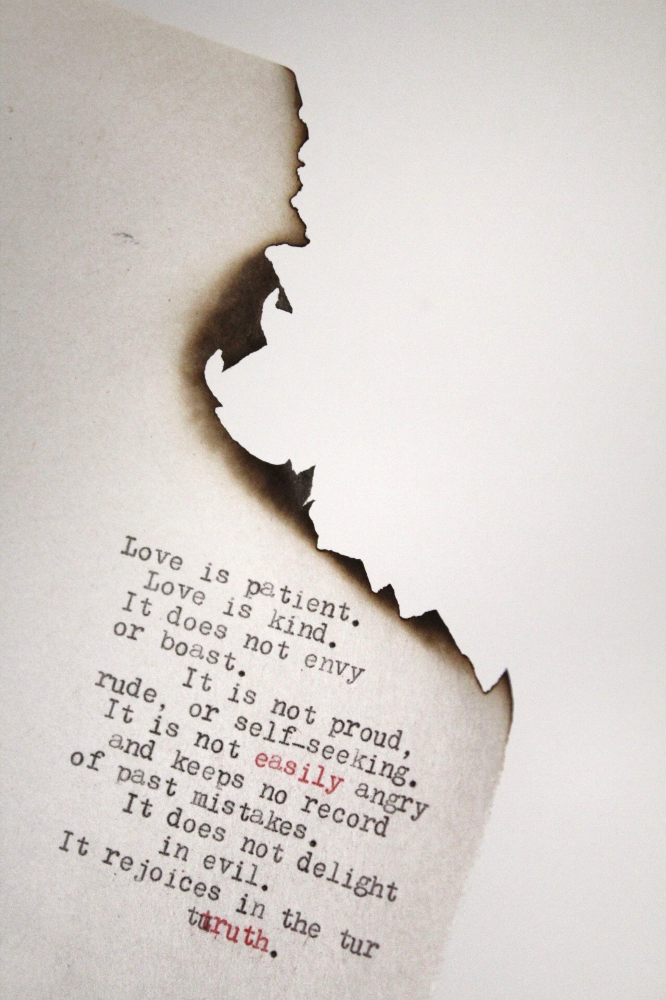

Love One Another
Does love ever fail?
Love is just love. In love If You Find Your lover then great, if you dont get them then you get the
longing for love, the pain of love, the stain of love. In love no one ever loses anything, he always
get something. If not the campionship of lover, then the longing for them, the sepration from them.
Analytics
Analytics is the process of discovering, interpreting, and communicating significant patterns in data. . Quite simply, analytics helps us see insights and meaningful data that we might not otherwise detect.
Marketing
Marketing refers to the process an organization undertakes to engage its target audience, build strong relationships to create value in order to capture value in return. It is one of the primary components of business management and commerce.
Development
Development is a process that creates growth, progress, positive change or the addition of physical, economic, environmental, social and demographic components.
Support
A way to pay for the things that one needs to live : source of income She has no visible means of support.
Your Blog on the peoples Heart
Do you know when your love is complete?
When one sided love with the lover, makes you believe everything, you stop making deals.
What could be a bigger deal than asking for love in return for your love?
When a lover, overcomes deals and helplessness then love comes to salute the lover, itself. Whether
your love, loves you or not. They shouldn't be part a love, that's when you achieve greatness in
love.


 
